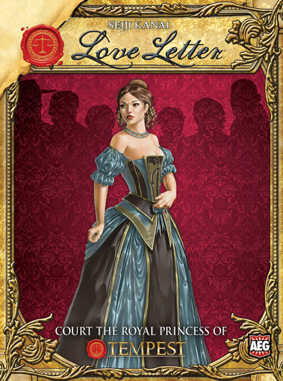
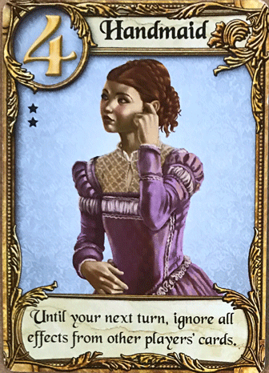
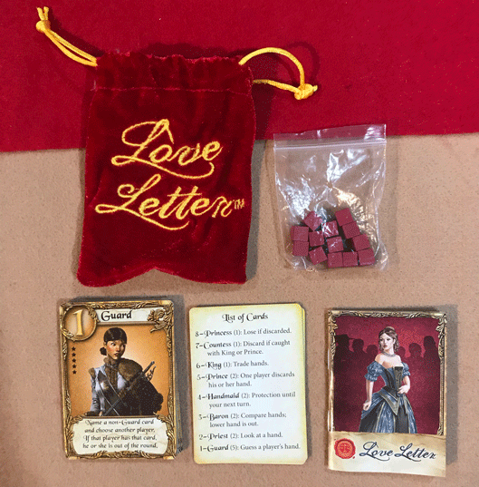
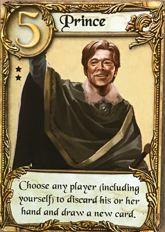
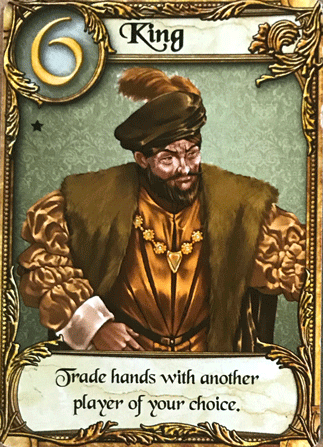
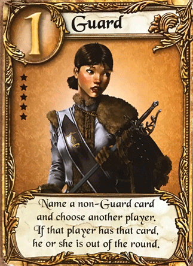
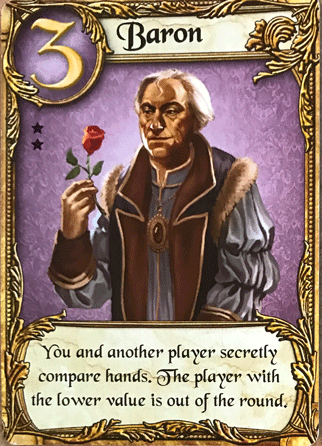
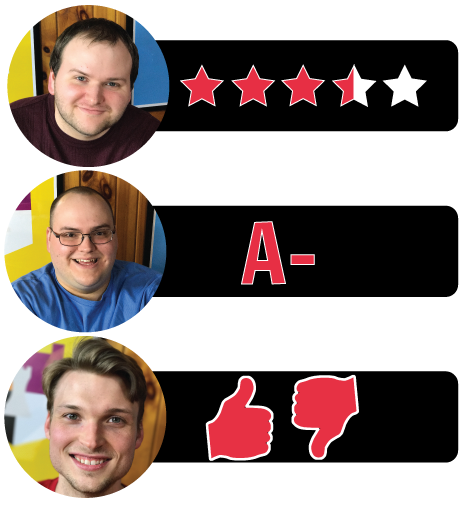

In our Love Letter review, Board Crazy discusses this fun and simple card game designed by Seiji Kanai and published by AEG. In this game, each player is trying to win over the princess’ heart by sending her letters, but they must use a little bit of deduction and deceit to try and steal her heart. Keep reading to see our reviews of Love Letter.

D reviews Love Letter
 (Author’s
note: this review is meant to accompany our gameplay video and will not
go in-depth on the game’s rules. If you’re interested in learning how
the game is played, please watch the video. It’s not bad.)
(Author’s
note: this review is meant to accompany our gameplay video and will not
go in-depth on the game’s rules. If you’re interested in learning how
the game is played, please watch the video. It’s not bad.)
Seiji Kanai’s Love Letter is a very good game. A very good game, that is to say, that seems to be suffering from a bit of an identity crisis. It feels like a party game, with its simple rules, quick playtime, and light-heartedly contentious gameplay. However, with a player count of only 2-4, it’s not well-suited for larger get-togethers. So, I guess it’s a family game, albeit one that may not appeal to all families (or family members). Younger boys in particular will probably be a tough sell. I imagine a younger version of me would have scoffed at the idea of playing a game called Love Letter that came in a cute, red pouch and featured art that looks like it came out of a Jane Austen picture book. Of course, that younger version of me is an idiot, but there are a lot of idiots out there. And it must be said that contentiousness, however light, may be a bit much for what some families are looking for in a game.
So, yeah, Love Letter is a game that may not be great for all occasions, but if you’re looking for something to play with a small group of friends, it’s a real gem. The rules can easily be learned in a matter of minutes, and the reference cards included do a good job of helping players remember all the necessary details. There are a couple of caveats that you might need to reference the rulebook for, but they’re pretty straightforward and unlikely to come up often. Also, all of the cards in the game feel useful and well-balanced, which is really the most important thing in a card game like this. There is definitely a fair bit of luck involved and it’s not uncommon to feel a little discouraged at times, but the game moves quickly enough that everyone should get a taste of success at some point. And it isn’t without strategy, even when it comes to something like guessing your opponent’s card. Deduction, reasoning, and occasionally a bit of bluffing come into play, which makes the game more fun and rewarding than if it were purely based on luck.
The packaging is unique and decent overall. Of course, the most noteworthy thing is that the entire game comes inside of a small pouch instead of a box. There aren’t many components in this game, just the cards, the rulebook, and the scoring tokens, so the decision to go with the pouch is both a fun and practical alternative. The cards are fine, neither flimsy nor sturdy, and the art printed on them is solid, but not spectacular. The score markers are tiny wooden cubes, which aren’t ideal. The rulebook is easy to understand and includes a good amount of flavor text for people who appreciate that sort of thing. Love Letter is actually just one of many games within the same shared world, so fans of other games in the series will probably enjoy that the most.
Ultimately, Love Letter is definitely a game worth having, although this original version may not be the one to get. Love Letter Premium was released in 2016 and adds a couple new types of cards to the game and supports up to eight players. I can’t think of a good reason not to get that version instead. Also, the game has been adapted numerous times using popular intellectual properties like Batman and The Lord of the Rings, so big fans of those series may want to check those out in lieu of the original. Regardless of which version you get though, Love Letter is a definitely a fun and well-balanced game that is worth having in your collection.
D’s Rating: Three and One-Half Stars out of Five.
Will reviews Love Letter
 Love
Letter is one of those games that surprises you – it’s almost better
than it has any right to be. I mean, it comes in a tiny red pouch that
includes the game’s few components: some cards, a handful of miniscule
red cubes, and a mini rulebook. That’s it, and yet Love Letter manages
to be a game full of deduction and lighthearted thrills, despite its
dearth of components. If I were to design a tabletop game, I wouldn’t
want it to be an opus like Twilight Imperium. No, I would design
something like Love Letter – simple, effective, and quick.
Love
Letter is one of those games that surprises you – it’s almost better
than it has any right to be. I mean, it comes in a tiny red pouch that
includes the game’s few components: some cards, a handful of miniscule
red cubes, and a mini rulebook. That’s it, and yet Love Letter manages
to be a game full of deduction and lighthearted thrills, despite its
dearth of components. If I were to design a tabletop game, I wouldn’t
want it to be an opus like Twilight Imperium. No, I would design
something like Love Letter – simple, effective, and quick.
At this point, I would usually sprint through the physical components and scrutinize their build quality, but that’s pointless since Love Letter only includes like 20 cards and maybe a dozen or so red wooden cubes. They’re well made, but that doesn’t really matter. What matters is the gameplay, and I can say that I love the breezy, intuitive gameplay that comes with Love Letter. The concept is basic – you’re trying to woo the princess by getting your love letters to her first. In real life, that actually plays out as a deduction game that involves knocking your opponents out of the round by utilizing the special abilities on the sixteen character cards. Ultimately, the goal is to be the person left with the highest card at the end of the round, and the victor (in a 3 player game) is the person who is the first to win five rounds (represented by the red cubes).
It’s important to understand how Love Letter functions as a game because it really exemplifies how easy to grasp this game is. And yet, while simple in theory, there’s a lot going on in a game of Love Letter. For instance, let’s say that you were dealt the King card that has a numerical value of six (6), which makes it one of the most valuable cards in the game. Later in the round, you draw your second card and it’s the Princess that has a value of eight (8), the highest and most valuable card in the game. At this point, you’ll be left with no other choice but to play the King, whose special ability requires the active player to trade his or her hand with another player. Once the King is played and the trade occurs, a lot of things will be going through the other players’ minds. Did they play the King as a misdirect? Did they play the King because they had an even higher card like the Princess? And if so, do I go after the player they just traded with and try to remove them from the round? This is merely one example of how deduction and strategy play into a session of Love Letter. It’s all rather brilliant for a game with fewer than 40 total components.
Ultimately, deduction is the name of the game here, so to speak. Winning or losing a game of Love Letter depends on how tuned in you are in regards to your opponents’ intellect and habits. Some players prefer some cards while others prefer different cards, and learning that information is part of the fun. And when you deduce correctly and force someone to discard the Princess, it’s insanely satisfying. You’d think you’d be livid if someone eliminated you like that too, but you won’t be. I don’t know how, but the designer of Love Letter, Seiji Kanai, figured out how create a game that almost never builds any displeasure or tension between its players. For competitive gamers, that might be a turn off, but for someone like me, that’s a selling point.
If I had to point out any flaws, it would be that Love Letter is only for 2-4 players, when it should really be for up to six, at least. It does play like a party game, but how often do people have parties with only four people? A four-player game is more properly referred to as a “family game”, but a family game Love Letter is not. Still, I can’t help but to feel that this complaint is more of a nitpick. A lot of gaming groups are on the smaller side, and this game will undoubtedly appeal to them. All in all, Love Letter is a tiny little gem of a game that barely takes any time to play and enjoy. I honestly feel that it would appeal to most people, especially those who don’t want all of the stress of weightier games. Will Love Letter become your favorite game? Probably not, but you will probably end up playing it just as much.
I give Love Letter an: A-
Graham reviews Love Letter
 I’m
sure we’ve all wanted to be the most eligible bachelor or bachelorette
at some point in our lives. But have you ever actually been the most
eligible bachelor or bachelorette? Well if you haven’t, there’s pretty
cool game that can make you feel like one. I’m talking about Love
Letter, a fun, little card game in which players try to win over the
princess’ heart through reasoning, deduction, and maybe a little
deception. It’s pretty simple – each round players draw and play one
card. They use these cards to try and get the other players out of the
round. There are 16 cards in total, and these cards have effects such as
allowing you to look at another player’s hand, allowing you to trade
hands with another player, and so on. If you’re the last one remaining
in the round, it means the princess has received one of your letters and
you collect a token (red cube). The first person to collect five of
these tokens wins the game.
I’m
sure we’ve all wanted to be the most eligible bachelor or bachelorette
at some point in our lives. But have you ever actually been the most
eligible bachelor or bachelorette? Well if you haven’t, there’s pretty
cool game that can make you feel like one. I’m talking about Love
Letter, a fun, little card game in which players try to win over the
princess’ heart through reasoning, deduction, and maybe a little
deception. It’s pretty simple – each round players draw and play one
card. They use these cards to try and get the other players out of the
round. There are 16 cards in total, and these cards have effects such as
allowing you to look at another player’s hand, allowing you to trade
hands with another player, and so on. If you’re the last one remaining
in the round, it means the princess has received one of your letters and
you collect a token (red cube). The first person to collect five of
these tokens wins the game.
I think Love Letter is an enjoyable and well-designed game, but there’s inherent problems that come from games so simple and small in scale. First, there’s a lot of luck involved. A few times in our playthrough, we randomly called someone out on the first turn of the game using the Guard Card. This card allows you to pick a player and guess what card they have, and if you’re correct, then that player is out of the round. Plus, the draw phase of the game is entirely luck, and since you only ever have two cards (temporarily) in your hand, there’s not a lot of wiggle room. Second, this is the kind of game that can get stale pretty quickly. I’ve played plenty of small games that are just as simple and can be played in a similar amount of time. However, I’m way more likely to go back and replay those games because there’s a lot more to them. Love Letter is just too elementary and therefore lacks excitement. As I said though, this game is meant to be super easy, and I am probably criticizing it for something it’s not trying to be.
Regardless of the game’s faults, I had fun playing Love Letter. Some of the situations you get into can be chaotic and funny, and there’s something special about seeing the faces of your opponents when they’ve received a challenging combination of cards, like two Barons. I also love that the rounds can be played in matter of minutes, and that there are a bunch of rounds per game. It makes the losses easier to swallow and gives everybody a chance at victory. Also, the rules are very uncomplicated and explained well, which makes this a great game to pass the time with a few friends. Finally, the packaging is playful and different, and the artwork is appropriate for the theme.
I really don’t have too much more to say about Love Letter. There just isn’t that much to the game. I think there are enough positives to give it a few playthroughs, but there isn’t really enough to make it stand out. Still, I would be interested to see how the game plays with more cards and players. It would also be nice to be able to stash more than one card in your hand at a time. Overall, I had a fun time playing Love Letter, but it probably won’t be a frequent game for us.
I give Love Letter one thumb up and one thumb down.
Love Letter Game Review – Board Crazy’s Ratings

Leave a Reply
You must be logged in to post a comment.